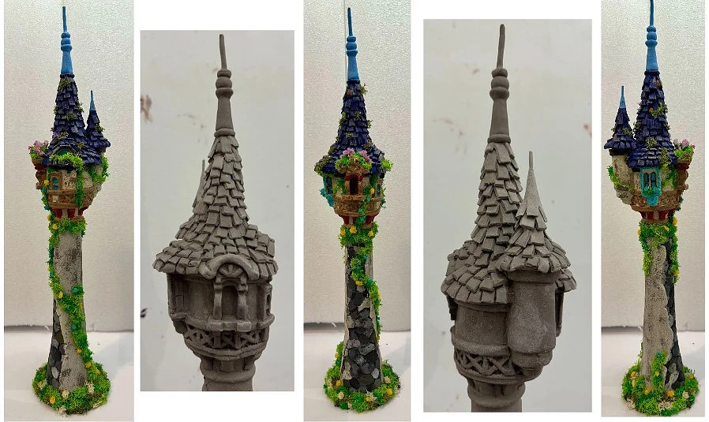

Selected coursework & creative practice
Projects &
creative work.
A collection of immersive concepts, themed environments, digital models, and creative explorations.
Showing all 8 projects.
01 /
Themed Entertainment Design
02 /
3D Modeling & Blender

A different kind of making
Working in clay.
Sculptural forms, material exploration, and the creative possibilities of making by hand.